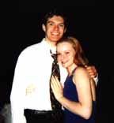
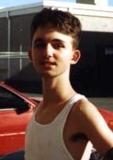

This is me. My name is Cha-Chee, and I am a college boy here at the University of Texas at Austin. I do the programing and most of the writing for this magazine, and frankly, I love it. I am sensitive, yet understanding, and I enjoy candle light dinners, long walks on the beach, and cuddling up by the fireplace. -Oh, yes, and the occasional makin' bacon.
This is me. My name is Cha-Chee, and I am a college boy here at the University of Texas at Austin. I do the programing and most of the writing for this magazine, and frankly, I love it. I am sensitive, yet understanding, and I enjoy candle light dinners, long walks on the beach, and cuddling up by the fireplace. -Oh, yes, and the occasional makin' bacon.
-E-mail me with comments or suggestions!
Lord_Cha-Chee_The_Indescribably_Wonderful@mail.utexas.edu
That's really my address! REALLY!

Have you ever been sitting there and wondered to yourself,"Why me?" Well, I haven't, because I know why, and I'm not going to tell you. But aside from knowing the meaning of life, there's really not a whole lot to me. As far as wit goes, however, I'm A-list. I was voted Mr. Wit at last year's "Who's the Wittiest of Them All?" contest, and I took home a beautiful trophy adorned with a large, golden statue of Michael Dukakis. Now my fish have an algae infested statue to swim around! Woo-hoo!
-Send me stuff.
enorth@mail.utexas.edu
 My name isn't really 'Mr. Buh', but I'll be damned if I let you people know my real name. I'm 6'2" with baby blue eyes, blond hair, a gorgeous face, a terrific tan, and an atheletic build. Whenever I'm in public, I get pestered by tons of beautiful, tan women who beg me to let them perform all sorts of exotic sexual acts upon me. Or maybe I look like the picture to the left; you decide.
My name isn't really 'Mr. Buh', but I'll be damned if I let you people know my real name. I'm 6'2" with baby blue eyes, blond hair, a gorgeous face, a terrific tan, and an atheletic build. Whenever I'm in public, I get pestered by tons of beautiful, tan women who beg me to let them perform all sorts of exotic sexual acts upon me. Or maybe I look like the picture to the left; you decide.
-Mail me,or don't. See if I care.
Mr.Buh@mail.utexas.edu
 Hey, I'm E-boy and I'm well known for being untainted by evil, and sharing such things as sidewalk chalk and human kindness. I am an article of genuine goodness, and I hate, hate, HATE bugs.
Hey, I'm E-boy and I'm well known for being untainted by evil, and sharing such things as sidewalk chalk and human kindness. I am an article of genuine goodness, and I hate, hate, HATE bugs.
-Write to me!
christob@post.cis.smu.edu
Hi, my name's Chi Chi, and I already know that my name is much like Cha-Chee's(he's my brother). If you want to talk cool ska music with me, I can dig that, daddio, but if you ask me if I've heard of a new band called the Mighty Mighty Bosstones or Reel Big Fish, prepare to feel the wrath of BARTHOLOMEW!!! HA!HA!HA! (evil laughter) By the way, my favorite actor is Al Pacino and I possess the power to change my appearance from white trash to pimp to high school student with the snap of a finger and the changing of some clothes.
-Tell me how cool I am.
thalken1@airmail.net
Please Dirrect any Comments or questions about the magazine to Cha-Chee, or keep them to yourself and see if anything comes of them. If you like this magazine, please, just tell your friends. It is here solely for your enjoyment, and the more people that read this, the more we can justify putting alot of work into making the next issue. This magazine was skill-crafted by hand, and not by any of those stupid page makers. I HATE those things.
-oh yes. And if you would like to recieve e-mail when this page is updated(which is once a month) just ask.